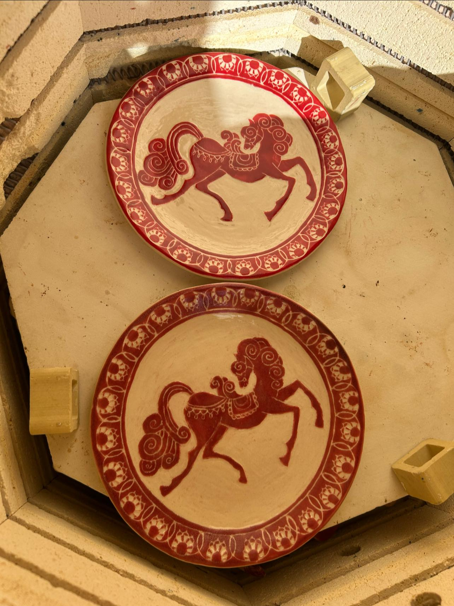

Кружок керамики для взрослых в Петах-Тикве
Это не курс. Не программа. Не экзамен.
Это еженедельное место, где вы лепите из глины в маленькой тёплой группе — в своём темпе, с удовольствием, без давления результата.
Уже почти 4 года я встречаю здесь людей, которые приходят уставшими — и уходят немного другими. Руки в глине, голова свободна.
📍 Нахалат Цви 1, Петах-Тиква · 054-530-8681

Мои занятия — это не курс керамики. Это еженедельные кружки в удовольствие.
Глина — великий природный целитель. Тактильная работа занимает руки, ритмичные движения снимают мышечное напряжение, успокаивают нервную систему. В процессе лепки словно обмениваешься с материалом энергией — передаёшь ему всё, что накопилось за неделю, а получаешь обратно тишину и покой.
Это не хобби. Это практика. Как медитация, только руки заняты делом.
Чем кружок отличается от мастер-класса
Не один раз — а каждую неделю. Вы приходите, садитесь за глину, и это становится частью вашей жизни.
От занятия к занятию вы видите прогресс. Первая кружка и десятая — это два разных человека.
Нет жёсткой программы. Вы лепите то, что хотите. Я рядом — подсказываю, направляю, но не диктую.
До 4 человек. Каждый получает внимание. Атмосфера — тёплая, негромкая, своя.
Как это выглядит
Вы приходите — на столе глина, инструменты, тихая музыка. Первые несколько минут рассказываю, что будем делать сегодня. Потом — тишина и работа руками.
Кто-то лепит кружку. Кто-то продолжает вазу с прошлой недели. Кто-то просто разминает глину и думает — это тоже работа.
В конце — обжигаем, глазируем, забираем домой. Или оставляем на следующей неделе.

Для кого кружок
Для взрослых от 18 лет, которым нужна регулярная пауза от экранов и мыслей. Опыт работы с глиной — не важен. Большинство моих учеников начинали с нуля.
Для тех, кто уже ходил на мастер-класс и понял: хочется больше. Для тех, кто ищет не результат, а процесс — еженедельное место, куда хочется возвращаться.
Для тех, кому важна маленькая группа — без толпы, без спешки, без соревнования.
Что лепят в кружке
Всё это сделали мои ученики — большинство из них впервые взяли глину в руки именно здесь 👏🏻🧡
📍 Нахалат Цви 1, Петах-Тиква (центр города)
Расписание и стоимость — уточняйте при записи. Напишите в WhatsApp или позвоните — расскажу про ближайшие группы и свободные места.